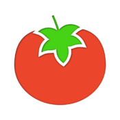

<div class="col-md-3 task-container mid-margin-right"
	ng-class="{'bg-skip-color': todo.taskType == 1, 'bg-transfer-color': todo.taskType == 2, 'bg-optimize-color': todo.taskType == 3, 'bg-perform-color': todo.taskType == 4}"
	taskType="{{todo.taskType}}" data-drag="true"
	data-jqyoui-options="{revert: 'invalid'}"
	jqyoui-draggable="{placeholder:true,animate:false}">
	<div class="task-header">{{todo.description}}</div>
	<div class="task-pomodoros">
		
	</div>
</div>